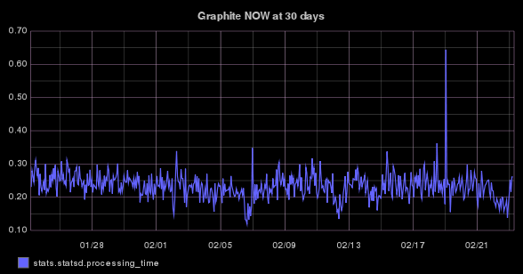

Search :: features profiles to validate
Validate :: features profiles :: stats.statsd.processing_time - limited by 2 features profiles ordered by DESC
The below table gives you a side-by-side visual comparison of the graphs of the features profile and the graphs of the parent (or parent's parent) that the features profile was LEARNT from. You can validate and/or disable each using the checkboxes and buttons provided. In future hopefully you will be able to tick all the boxes you want and submit them with one Submit button. However until then, each has to be done individually and a new tab is opened, which does at least allow for confirmation that the features profile has actually been validated. Note: In Chrome and Chromium the images may display too large, a quick workaround is to decrease the zoom in your browser window using the combination of the Crtl + - keys.| fp id | parent fp id | parent's parent fp id | metric | full duration | disable | validate | fp_graph | parent fp_graph |
|---|---|---|---|---|---|---|---|---|
| 673 | 657 | None | stats.statsd.processing_time |
86400 |
2017-02-23 02:54:33 UTC fp id 673 24.0 hours at this time was: 
ionosphere_images?image=/opt/skyline/ionosphere/features_profiles/stats/statsd/processing_time/1487818473/stats.statsd.processing_time.graphite_now.24h.png LEARNT from resolution (720.0 hours):  ionosphere_images?image=/opt/skyline/ionosphere/features_profiles/stats/statsd/processing_time/1487818473/stats.statsd.processing_time.graphite_now.720h.png |
2017-02-21 19:58:23 UTC - using parent fp id 657 24.0 hours at this time was: 
ionosphere_images?image=/opt/skyline/ionosphere/features_profiles/stats/statsd/processing_time/1487707103/stats.statsd.processing_time.graphite_now.24h.png LEARNT with resolution (24.0 hours): 
fp id None at 24.0 hours ionosphere_images?image=/opt/skyline/ionosphere/features_profiles/stats/statsd/processing_time/1487707103/stats.statsd.processing_time.graphite_now.720h.png |
||
| 674 | 673 | 657 | stats.statsd.processing_time |
2592000 |
2017-02-23 02:54:33 UTC fp id 674 LEARNT from resolution 720.0 hours: ionosphere_images?image=/opt/skyline/ionosphere/features_profiles/stats/statsd/processing_time/1487818473/stats.statsd.processing_time.graphite_now.720h.png 24.0 hours at this time was:
ionosphere_images?image=/opt/skyline/ionosphere/features_profiles/stats/statsd/processing_time/1487818473/stats.statsd.processing_time.graphite_now.24h.png |
2017-02-21 19:58:23 UTC - using parent's parent fp id 657 LEARNT with resolution (720.0 hours):
ionosphere_images?image=/opt/skyline/ionosphere/features_profiles/stats/statsd/processing_time/1487707103/stats.statsd.processing_time.graphite_now.720h.png 24.0 hours at this time was:
fp id 657 at 24.0 hours ionosphere_images?image=/opt/skyline/ionosphere/features_profiles/stats/statsd/processing_time/1487707103/stats.statsd.processing_time.graphite_now.24h.png |